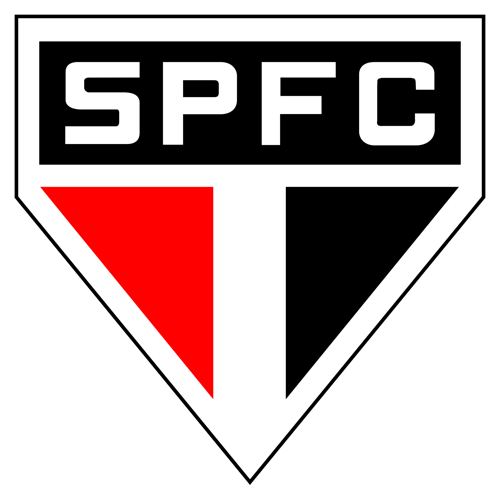

Hino do São Paulo
Letra
Salve o tricolor paulista
Amado clube brasileiro
Tu és forte, tu és grande
Dentre os grandes és o primeiro
Tu és forte, tu és grande
Dentre os grandes és o primeiro
Ó tricolor
Clube bem amado
As tuas glórias
Vêm do passado
Ó tricolor
Clube bem amado
As tuas glórias
Vêm do passado
São teus guias brasileiros
Que te amam ternamente
De São Paulo tens o nome
Que ostentas dignamente
De São Paulo tens o nome
Que ostentas dignamente
Ó tricolor
Clube bem amado
As tuas glórias
Vêm do passado
Ó tricolor
Clube bem amado
As tuas glórias
Vêm do passado
São Paulo Futebol Clube é um clube poliesportivo brasileiro da cidade de São Paulo, capital do estado homônimo.
Foi fundado em 25 de janeiro de 1930,tendo interrompido suas atividades em maio de 1935, e as retomado em dezembro do mesmo ano.
No futebol, é um dos clubes mais bem sucedidos do Brasil, sendo que, dentre seus principais títulos, destacam-se três Mundiais (recorde absoluto a nível nacional),
três Copas Libertadores (recorde nacional compartilhado com Palmeiras, Santos e Grêmio), uma Copa Sul-Americana, seis Campeonatos Brasileiros e vinte e dois Campeonatos Paulistas. Quanto a títulos internacionais, o São Paulo, com 12 conquistas,
é o terceiro clube da América do Sul com o maior número de troféus, ficando atrás somente de Boca Juniors e Independiente.
No que diz respeito ao somatório de títulos oficiais de abrangência nacional e internacional de clubes brasileiros, em janeiro de 2021, o São Paulo figurava como o maior campeão do Brasil, com dezoito conquistas.
Voltar